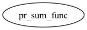

Master index
Index for marsbar/@marsy/private
Dependency Graph for marsbar/@marsy/private

Generated on Thu 23-Jan-2025 10:49:26 by
m2html
© 2003-2019
 Master index
Master index Master index
Master index